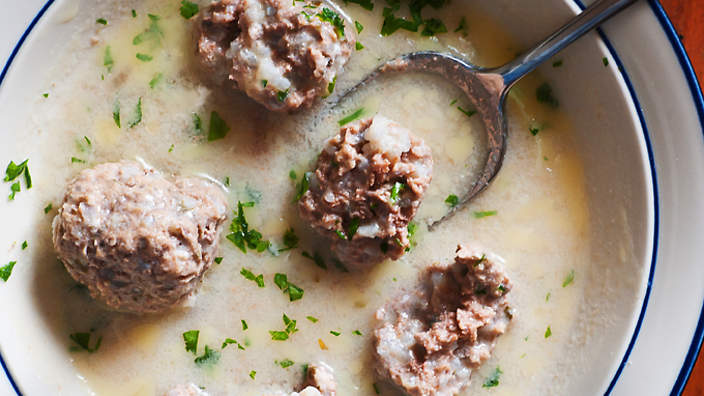

Yuvarlakia
As found in akispetretzikis.com

Description
Yuvarlakia is a Greek dish consisting of balls of ground meat, rice, and seasonings, cooked in a pot,
in water or meat broth.
The mixture is similar ro that used for making sarma.
They may be served with tomato or avgolemono sauce.
Depending on the thickness of the sauce, it may be considered a soup or stew.
Ingredients
For the meatball soup
- 1 onion
- 1 clove of garlic
- 500g ground beef
- 150g round grain rice
- 1/4 bunch dill
- 1 ts mint
- salt
- pepper
- 2-3 ts olive oil
- 1 1/2 liter water
- lemon peels of one lemon
- 2 bay leaves
For the egg-lemon sauce
- 2 egg yolks
- 1 ts corn starch
- lemon juice of 2 lemons
- 1 ts dill
Execution Method
For the meatball soup
- In a blender add the onion, the garlic, and 2 tablespoons water. Beat very well.
- Put the mixture in a tea towel and squeeze well so that the whole water is removed.
- Transfer to a bowl and add the ground beef, the rice, the dill and the mint finely chopped, salt, pepper, olive oil, and mix very well.
- Shape 18-20 meatballs and add them into a pot.
- Add the water, the lemon peels, the bay leaves, the vegetable stock, and cover with the lid. Simmer over low heat for 30-40 minutes.
For the egg-lemon sauce
- In a bowl add the yolks, the corn starch, the juice of 2 lemons, the dill, and whisk well.
- Very slowly, add to the bowl 2-3 ladlefuls of the stock where the meatballs boiled, by whisking constantly.
- Transfer to the pot and stir lightly for 30 seconds, or until it comes to a boil.
- Serve with feta cheese, bread, olive oil, oregano, and pepper.
Return to Home Page